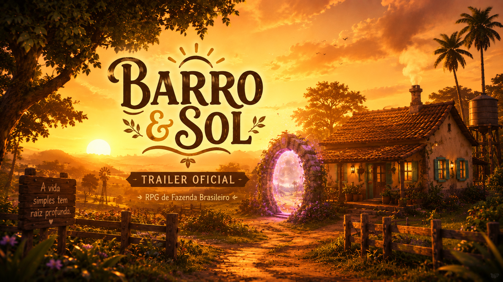
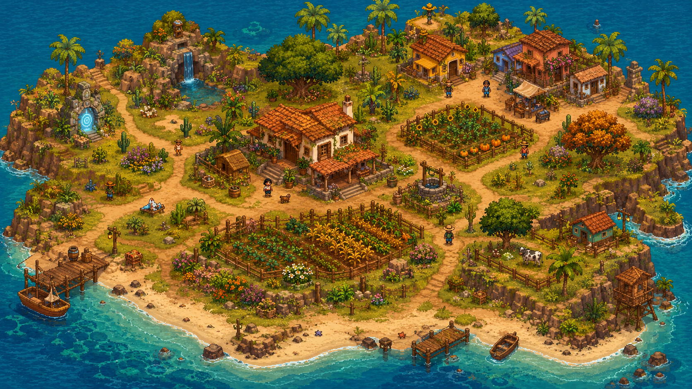
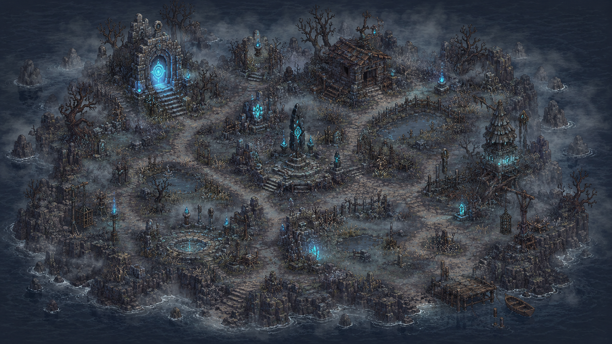
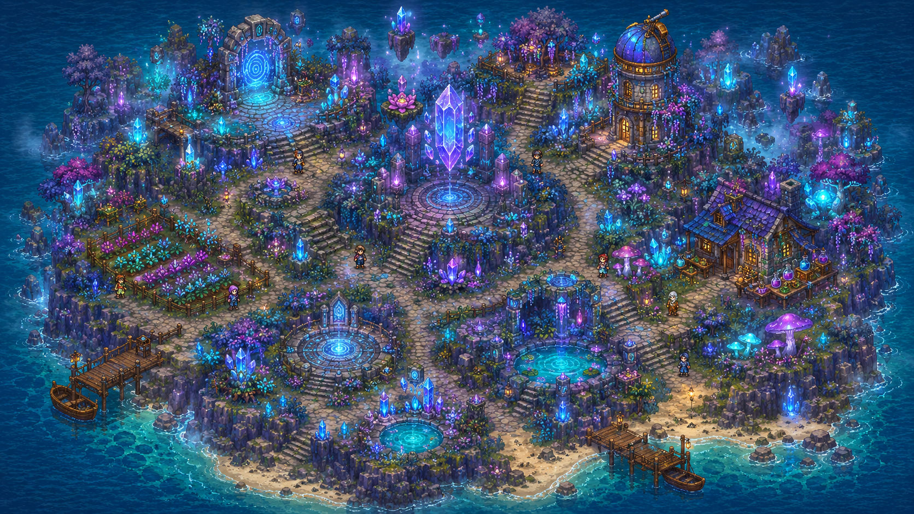

Cultive sua terra
Prepare o solo, plante sementes, cuide da água e transforme um terreno simples em uma fazenda cheia de vida.
Um RPG de fazenda brasileiro sobre recomeço, comunidade e segredos antigos. Plante, explore, conheça moradores e atravesse portais para ilhas onde o sol, a neblina e a magia escondem algo maior.

Ao chegar em uma pequena propriedade marcada pela terra vermelha e pelo sol forte, você descobre que a rotina da fazenda guarda pistas sobre a Semente dos Deuses, cinzas misteriosas e caminhos para regiões que ninguém da vila ousa visitar.
Prepare o solo, plante sementes, cuide da água e transforme um terreno simples em uma fazenda cheia de vida.
Converse com NPCs, visite casas, descubra histórias locais e fortaleça sua relação com a comunidade.
Encontre pistas, itens raros, cinzas antigas e portais ligados a forças mágicas esquecidas.
Assista à primeira prévia de Barro & Sol: fazenda, mistério, portais e ilhas mágicas.
Baixar trailerA Ilha Principal traz aconchego, música leve e rotina de fazenda. A Ilha Cinzenta muda tudo com neblina, tensão e sensação de perigo. A Ilha Arcana fecha o contraste com brilho, magia e descoberta.
Cada ilha terá visual, música, sensação e mecânicas próprias para deixar a exploração mais marcante.
Região quente, acolhedora e cheia de tons terrosos. É onde a fazenda, a vila e sua nova vida começam.
Um lugar úmido, nebuloso e assustador. A terra parece doente, e algo antigo repousa sob a névoa.
Uma região mágica e misteriosa, ligada à Semente dos Deuses e a forças que alteram o mundo.
Conheça as três regiões principais do mundo de Barro & Sol: a ilha acolhedora da fazenda, a região cinzenta e a ilha arcana.



A meta principal agora é estabilizar as ilhas, organizar as cenas e chegar em uma primeira versão de PC jogável e postável.
Corrigir o fluxo principal da fazenda, revisar colisões, caminhos, tiles, câmera, entrada/saída de áreas e garantir que a ilha base fique jogável.
Aplicar o mapa correto, ajustar tiles, aumentar a atmosfera sombria, revisar neblina, passagens, colisões e sensação de perigo.
Organizar tiles mágicos, caminhos, construções, portais, efeitos visuais e identidade visual da ilha arcana.
Remover interiores do meio do mapa, criar cenas internas próprias e permitir entrar/sair das casas corretamente.
Finalizar interface, energia, vida, dinheiro, horário, itens, seleção de slots, mouse, teclado e layout limpo para PC.
Salvar posição, inventário, progresso, estado das plantações, ilhas desbloqueadas, horário e dados principais do jogador.
Gerar uma versão estável para testes, com fluxo inicial jogável, ilhas funcionando, HUD limpo e pacote preparado para divulgação.
Corrigir bugs encontrados pelos primeiros testes, revisar travamentos, colisões, telas quebradas, desempenho e pequenos ajustes de jogabilidade.
Adicionar trilhas da Ilha Principal, músicas de tensão da Ilha Cinzenta, temas mágicos da Ilha Arcana e efeitos sonoros para ferramentas, água, passos, menus e portais.
Criar falas, rotinas, horários, reações simples e pequenas histórias para deixar a vila mais viva e conectada com o mundo do jogo.
Implementar tutorial, primeiras tarefas da fazenda, introdução ao portal, pistas da Semente dos Deuses e objetivos para guiar o jogador no começo.
Adicionar compra de sementes, venda de colheitas, dinheiro, preços, recompensas e primeiros sistemas de evolução da fazenda.
Melhorar tiles, menus, transições, escala visual, legibilidade, efeitos de neblina, brilho mágico, performance e consistência da pixel art.
Criar tela de opções com volume de música, efeitos, tela cheia, resolução, controles, idioma e preferências de acessibilidade.
Preparar uma demo oficial para divulgação, com download organizado, trailer, site atualizado, instruções de instalação e versão estável para jogadores.
Acompanhe as principais mudanças do site oficial e do desenvolvimento de Barro & Sol.
Adicionada área de trailer oficial, capa nova, galeria focada nas três ilhas, botão do GitHub e downloads organizados como em desenvolvimento.
Adicionada logo visual na página inicial, favicon próprio do Barro & Sol e melhorias de acessibilidade no botão de música.
Site inicial publicado com história, ilhas, status do projeto e espaço para versões futuras do jogo.
Um resumo rápido para divulgar, apresentar ou acompanhar o desenvolvimento de Barro & Sol.
Respostas rápidas sobre o estado atual do jogo, downloads, plataformas e desenvolvimento.
Ainda não. O projeto está em pré-alpha e os downloads oficiais de Windows e Android continuam em desenvolvimento.
O projeto está sendo desenvolvido em C# com MonoGame, com foco inicial na versão de PC.
A versão Android está planejada, mas o foco atual é deixar a versão de PC estável, jogável e postável primeiro.
Estabilizar a Ilha Principal, corrigir a Ilha Cinzenta e a Ilha Arcana, separar casas/interiores, finalizar HUD/hotbar e implementar save/load.
Quando uma versão de teste estiver disponível, os bugs poderão ser reportados pelo GitHub. Isso ajuda a melhorar a estabilidade do jogo.
Informe o que aconteceu, onde aconteceu, se o erro se repete, qual versão foi usada e, se possível, envie print ou vídeo do problema.
Barro & Sol é um projeto autoral criado com carinho para valorizar um RPG de fazenda com identidade brasileira, clima acolhedor, mistério e pixel art.
Desenvolvedor independente brasileiro • Projeto feito com C# MonoGame • Barro, sol, fazenda e fantasia.
Os downloads ainda não foram liberados. Quando o APK e o EXE estiverem prontos, esta área receberá os links oficiais.